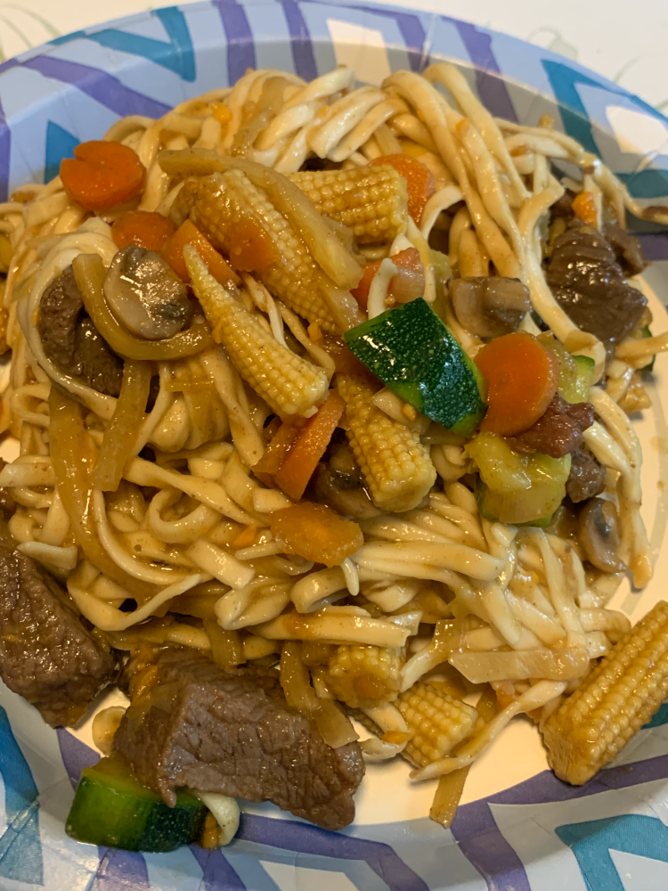

Ingredients
- 1.5-2lbs stir fry or stew cut beef
- 1 large leek- diced or julienned
- 0.5-1 lb chopped mushrooms of choice
- 1/2 cup chopped baby carrots or diced regular carrots
- 1 large zucchini- chunky cut
- 1 cup/can bamboo shoots-drained
- 1 can baby corn- drained
- 3 teaspoons fresh grated ginger or frozen
- 1/4-1/2 cup coconut aminos
- 1-2 teaspoon sriracha
- oil for cooking
- 1/2 teaspoon sesame oil
- 1 cup water
- garlic to taste
- salt to taste
- 1/2 lb noodles of choice- cooked
Directions
Heat a wok, large pot, or instant pot and add the cooking oil. Once that has heated add the beef and continuously stir it gently until it is completely browned. Add a small amount of salt and half the sriracha as the beef is browning. When the beef is mostly browned but has a little pink showing here and there add the cup of water to help create a sauce. Once the beef is completely browned remove it with tongs, leaving the liquid in the wok/pot. Set the beef aside in a bowl.
Toss the leek and carrots into the wok or pot and stir. Two to three minutes in add the garlic and ginger and continue to stir. Once the carrots have started to soften but are not fully soft add the mushrooms. Once the mushrooms have shrunk down add the zucchini. Two minutes after the zucchini has been added toss in the bamboo shoots. Another two minutes later add the baby corn. At this point everything should be fully cooked. Add the coconut aminos, the last of the sriracha, the sesame oil, and more seasoning to taste. Add the beef back into the pot and take the wok or pot off of the heat. Slowly add the noodles in, stirring gently to incorporate them evenly. Serve immediately with the option of more coconut aminos or sesame oil as a seasoning. Store leftovers in a sealed container in the fridge for several days. Enjoy!
